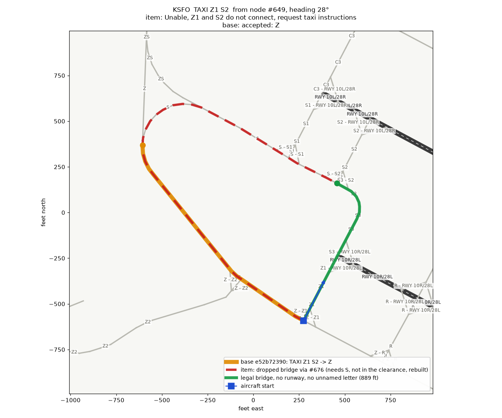
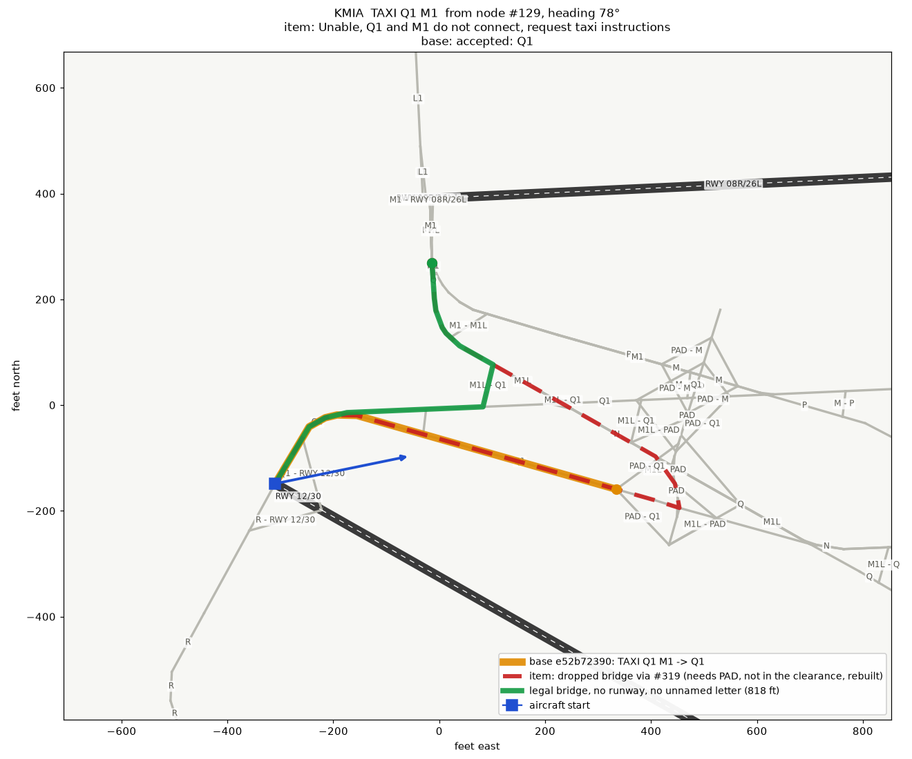
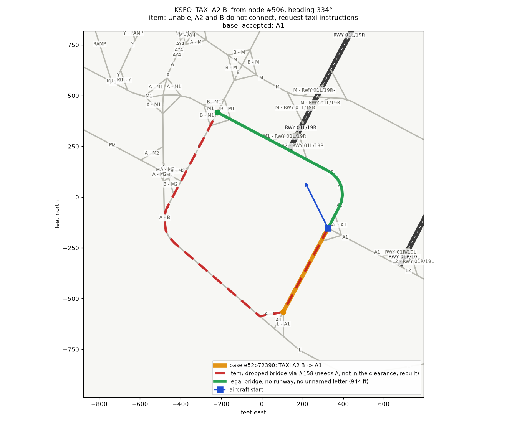
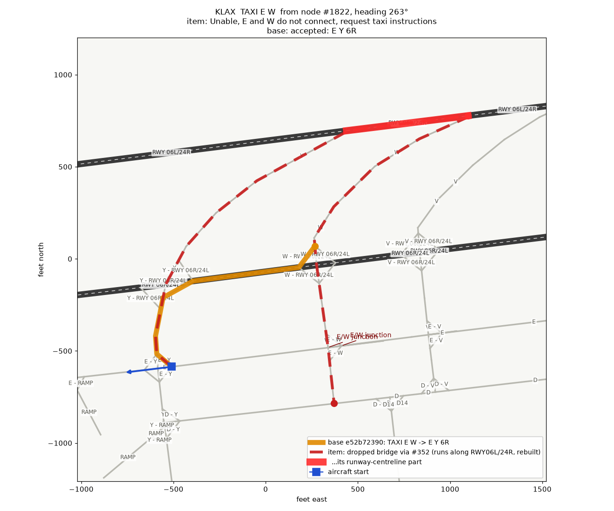
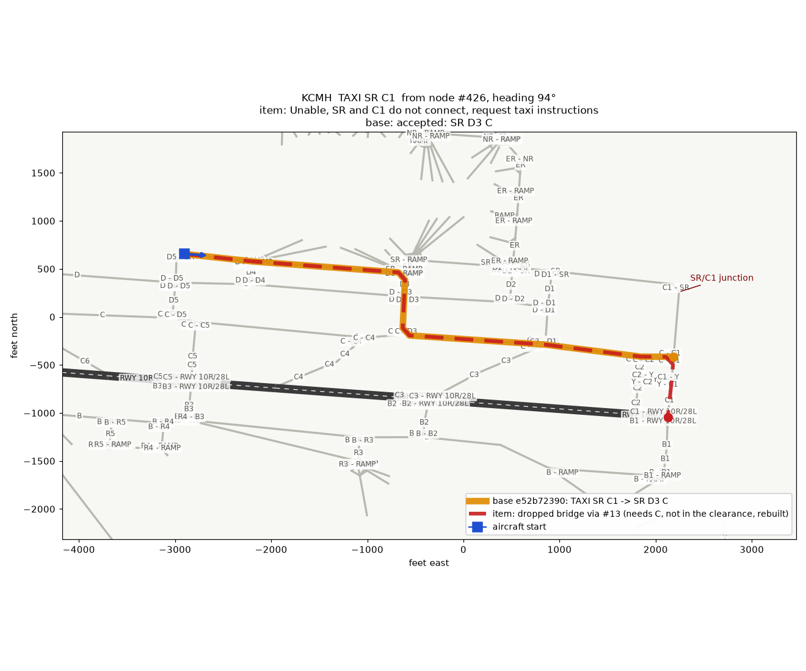
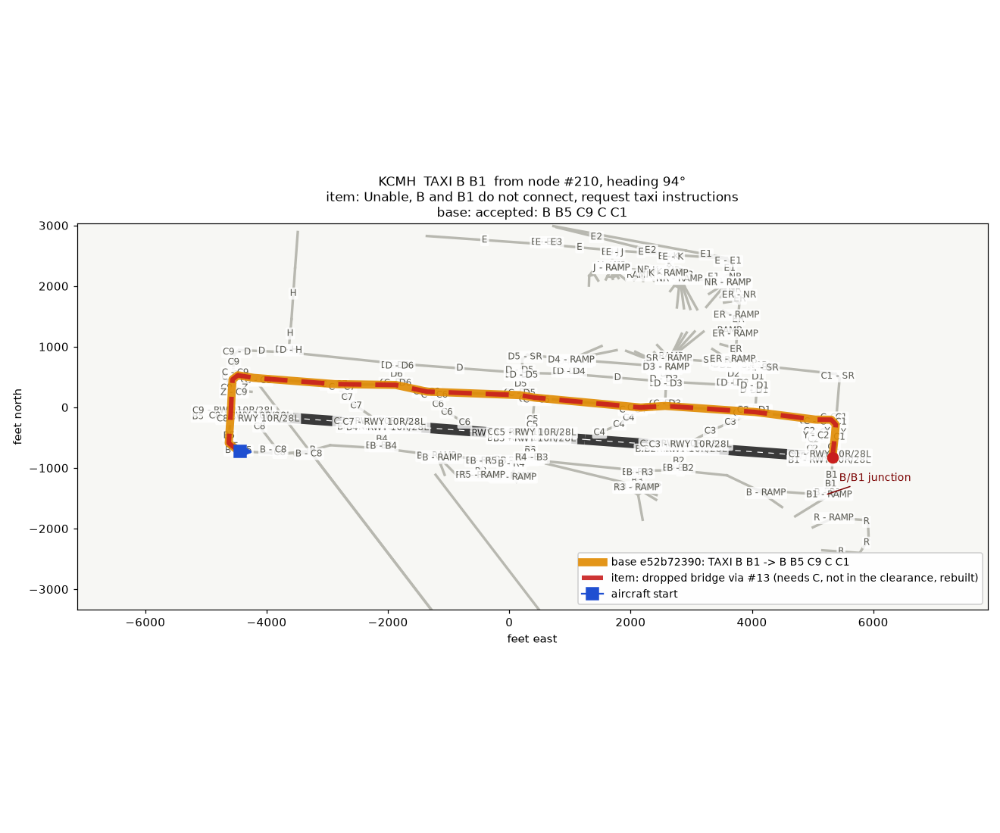
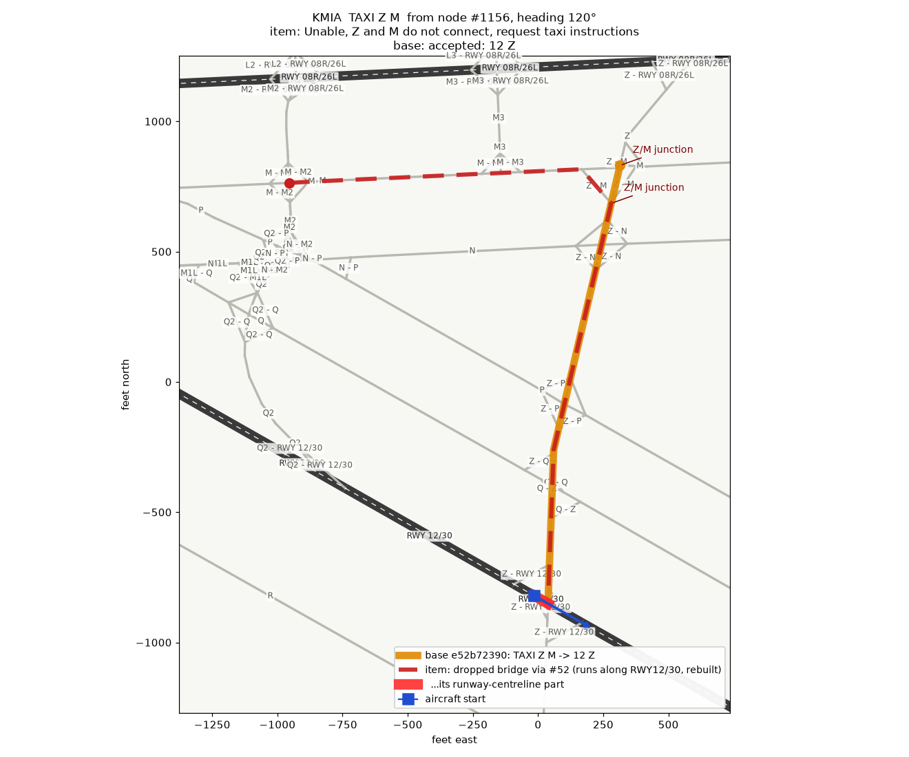
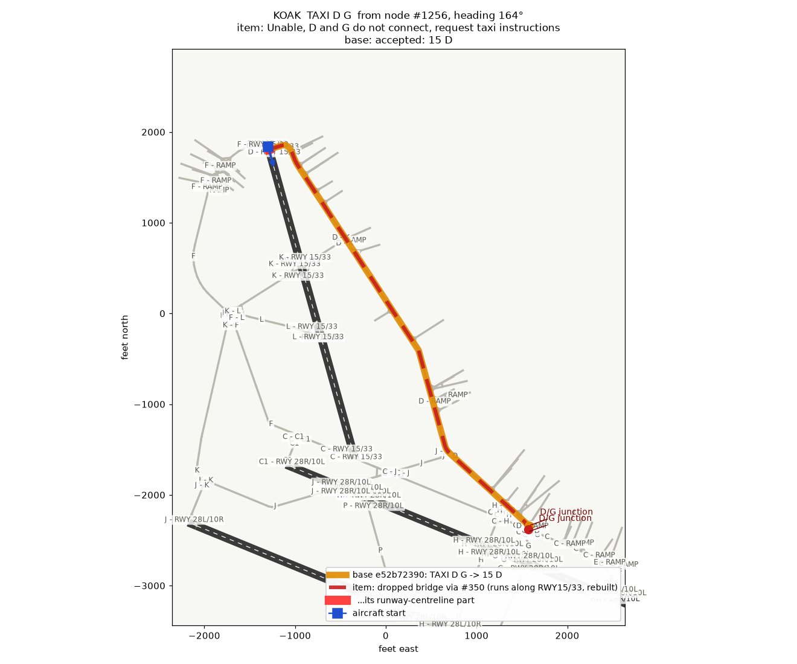
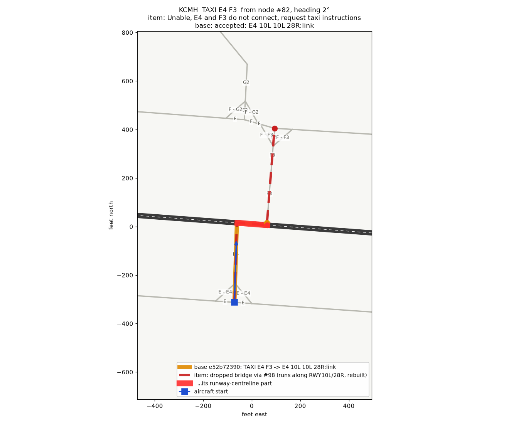

YAAT-899: the bridge filter's three suspected false refusals, found on real layouts
The item drops any detour bridge that runs along a runway (R1) or uses an unnamed lettered taxiway (R6). When it drops every bridge it finds, it refuses with "Unable, X and Y do not connect, request taxi instructions". The C# review suspected three ways this refuses a clearance it should not. All three happen on real test layouts. Every verdict below comes from GroundCommandHandler.TryTaxi on the item tree (branch yaat-899, uncommitted) and on a detached worktree of base e52b72390. Both trees ran the same temporary test file, since deleted.
| Case | Verdict | How often, over 16 airports (19,939 probes, 6,499 refusals) | Shown |
|---|---|---|---|
| 1. A legal bridge is dropped together with the cheapest one | REAL | 107 "do not connect" refusals of two named taxiways with no junction, where a bridge with no runway pavement and no unnamed letter reaches Y without a first-edge reversal. In 40 of them the bridge uses only digit stubs, RAMP and junction arcs. The rest also use a lettered taxiway at the start node, which the item counts as named. | SFO TAXI Z1 S2, MIA TAXI Q1 M1, SFO TAXI A2 B |
| 2. Junctions exist but the walk cannot reach one, and the message says "do not connect" | REAL | 190 refusals whose own [segment] line reports junctions≥1: 179 from an aircraft on a runway, 8 on a taxiway from its far end, 3 on a taxiway facing away from the junction | LAX TAXI E W (U-turn), CMH TAXI B B1, CMH TAXI SR C1 |
| 3a. The runway the aircraft stands on counts as "along a runway" | REAL | 1,018 refusals from a start on a runway where the only bridge left runs along that runway, without reversing. In 172 of them the bridge then drives X, and in 108 of those X and Y have a junction. | OAK TAXI D G on 15/33, MIA TAXI Z M on 12/30 |
| 3b. A crossing stitched through centreline nodes counts as "along a runway" | REAL, NOT AT MIA S | 106 dropped bridges that cross a runway through :link → centreline → :link (CMH 82, LAX 23, ATL 1). No refusal at MIA had a dropped bridge driving S over 12/30. | CMH TAXI E4 F3 across 10L/28R |
TestData/*.geojson are runway-only stubs (566 to 1,198 bytes). They parse to 0 nodes and 0 taxiways, so no TAXI can be probed there. The full vNAS layouts were not used, because the brief allows only TestData layouts.Case 1: the legal bridge to the same node is never tried
PickDetourEntry (SegmentExpander.cs:4205) runs one bounded AutoRouter search per node of Y (:4226) and keeps only that search's cheapest route. BridgeDropReason (:4273) judges that one route afterwards. The search only charges an unnamed letter a penalty, it does not exclude it. So at each node the cheapest route can be the illegal one, while a legal route to the same node exists. The item never searches for the legal route. When every node's cheapest route is dropped, TryDetour refuses (:4128).
The legal bridge was found by a test-only oracle: the same compiled search context, with every unnamed lettered taxiway and every runway edge (centreline and :link) hard-excluded. Its result is checked again against R1 and R6, and a route whose first edge turns more than 135° off the start heading is dropped. In all three examples the base accepted the clearance, routed toward an unnamed letter (S, PAD, A) and held short of it, without ever reaching Y. In both trees, naming the stub explicitly resolves.
| Clearance (start) | Item | Base e52b72390 | Item's dropped bridge to the legal bridge's node (rebuilt) | Legal bridge | Stub named, both trees |
|---|---|---|---|---|---|
SFO TAXI Z1 S2node #649 (Z/Z1), heading 28° | Unable, Z1 and S2 do not connect, request taxi instructions (5 of 5 bridges dropped, all "needs S") | Taxi via Z [Holding short of S: route to S2 needs S, not in clearance], 1,338 ft | to #676: Z S, 2,643 ft | to #676: Z1 S3, 889 ft; crosses 10R/28L square, Z1 into S3 649 2110 859 2119 662 2118 685 684 860 683 682 681 680 2125 679 676 | TAXI Z1 S3 S2: Taxi via Z1 S3 S2 |
MIA TAXI Q1 M1node #129 (Q1 at 12/30), heading 78° | Unable, Q1 and M1 do not connect (16 of 16 dropped, all "needs PAD") | Taxi via Q1 [Holding short of PAD: route to M1 needs PAD, not in clearance], 732 ft | to #319: Q1 PAD M1L, 1,569 ft | to #319: Q1 M1L, 818 ft 129 1081 519 518 2165 517 2168 593 1987 1981 1979 1978 1977 1976 321 319 | TAXI Q1 M1L M1: Taxi via Q1 M1L M1 |
SFO TAXI A2 Bnode #506 (A1/A2), heading 334° | Unable, A2 and B do not connect (136 of 136 dropped, all "needs A") | Taxi via A1 [Holding short of A: route to B needs A, not in clearance], 468 ft | to #158: A1 A, 1,881 ft | to #158: A2 M1, 944 ft; crosses 01L/19R square, A2 into M1 506 1942 515 514 513 512 511 510 509 508 1732 420 1731 18 884 1437 158 | TAXI A2 M1 B: Taxi via A2 M1 B |



Fix sketch. Exclude the dropped kinds inside the search, not after it. BuildDetourContext (:4466) would hard-exclude runway centreline and :link edges, arcs onto a centreline node, and the unnamed lettered taxiways CountsAsNamed rejects. Each node's search then returns its cheapest legal bridge. BridgeDropReason stays as the check. A search that then finds nothing is the "do not connect" case as ruled.
Case 2: X and Y do meet, but the item says they do not connect
When the local walk along X reaches none of the X/Y junctions, SegmentExpander.cs:2081-2086 falls into TryDetour. There the dropped-bridge refusal now reads "X and Y do not connect", which is false for these pairs. The base resolved each pair, but its routes were bad: an 11,929 ft loop across 10R/28L twice, and a 580 ft run along 6R. That is the behaviour R1/R6 exists to stop. So the refusal itself may be right, and only its wording is wrong. In the LAX case the junction is behind the aircraft. In both CMH cases it is ahead, but the walk along X dead-ends before it.
| Clearance (start) | Why the walk fails (measured, [local]) | Item | Base e52b72390 |
|---|---|---|---|
LAX TAXI E Wnode #1822 on E, heading 263° | junctions=2 (#353, #2229), both about 850 ft behind; the walk west along E fails (31 expansions) | Unable, E and W do not connect (15 of 15 dropped: 6 run along 06L/24R, 9 along 06R/24L) | Taxi via E on 6R [... taxiing via Y — not in the route issued], 1,362 ft, 580 ft along 06R/24L |
CMH TAXI B B1node #210 on B, heading 94° | junctions=1 (#243); the walk along B dead-ends at #668 after 4 hops (7 expansions) | Unable, B and B1 do not connect (6 of 6 dropped, "needs C") | Taxi via B B1 [... taxiing via C, B5, C9, C1 — not in the route issued], 11,929 ft, crossing 10R/28L twice |
CMH TAXI SR C1node #426 on SR, heading 94° | junctions=1 (#340); the walk along SR dead-ends at #396 (18 expansions) | Unable, SR and C1 do not connect (10 of 10 dropped, "needs C") | Taxi via SR C1 [... taxiing via C, D3], 5,739 ft |



Fix sketch. At :2081 the pair is known to have junctions. If TryDetour then returns TaxiwaysDoNotConnect, re-label it as a reach failure naming X and its junction, rather than claiming the taxiways do not connect. Probe scope: a start 1 or 2 nodes from each X/Y junction, facing away, gave 3 refusals in 8,366 probes, all at LAX. The 8 CMH-style refusals came from far-end starts.
Case 3a: the runway the aircraft is on blocks its own exit
AlongRunwayName (SegmentExpander.cs:4355) drops any bridge with a centreline segment, or an arc ending on a centreline node. It never reads ctx.AllowedCenterlineNames, which SearchContext.Compile fills with the runway at the start node (and any runway named in the path). From a runway node, the walk along X fails (OAK admitted 0 edges). Every bridge then starts with a few feet of the runway the aircraft is standing on, so every bridge is dropped. Both examples have X/Y junctions, so the message is also a case-2 one.
| Clearance (start) | Item | Base e52b72390 |
|---|---|---|
OAK TAXI D Gnode #1256 on 15/33 (F and D joins), heading 164°; allowed centreline RWY15/33 | Unable, D and G do not connect (16 of 16 dropped, all "runs along RWY15/33"); junctions=3 | Taxi via on 15 D G [holding at the D/G intersection ...], 5,308 ft, 33 ft on 15/33, then D to G |
MIA TAXI Z Mnode #1156 on 12/30, 61 ft short of Z, heading 120°; allowed centreline RWY12/30 | Unable, Z and M do not connect (127 of 127 dropped, all "runs along RWY12/30"); junctions=4 | Taxi via on 12 Z M [holding at the Z/M intersection ...], 1,776 ft, 61 ft on 12/30, then Z to M |


Many of the 1,018 scan hits are less clear cut: a back-taxi of hundreds of feet, up to about 1,900 ft, along the runway to a parallel stub (COS TAXI C6 C7 on 17R/35L: 460 ft). Whether those should resolve is a ruling, not a bug. The two shown use 33 and 61 ft of the runway, to reach the very taxiway the clearance names first.
Fix sketch. AlongRunwayName skips centreline segments, and arcs onto centreline nodes, whose runway matches ctx.AllowedCenterlineNames. That is the rule SearchContext.IsUnclearedCenterline already uses.
Case 3b: a crossing stitched through centreline nodes
CMH E4 and F3 meet 10L/28R from opposite sides, 124 ft apart, each through a :link edge. The item logged no [runway-crossing] line for the pair, so the offset-crossing rule (TryRouteAcrossOffsetRunway, :2129) did not take it. All 4 bridges, the crossing included, were dropped as "runs along RWY10L/28R". The base crossed, though its readback was malformed: "Taxi via E4 on 10L on 10L on 28R:link F3", with the notice "taxi via RWY10L/28R:link, RWY10L/28R". That readback is the R7 defect the item fixes.
| Clearance (start) | Item | Base e52b72390 |
|---|---|---|
CMH TAXI E4 F3node #82 (E/E4), heading 2° | Unable, E4 and F3 do not connect (4 of 4 dropped, all "runs along RWY10L/28R"); junctions=0 | accepted, 462 ft: E4, link, 124 ft on 10L/28R, link 82 146 90 153 155 106 |

Why the offset-crossing rule misses a :link join was not measured. One likely reason is that FindJunctionCandidates(E4, runway) finds no E4 edge at a centreline node. The pair would be a case-1/3b fix in TryRouteAcrossOffsetRunway, not in AlongRunwayName. MIA S over 12/30, the review's example, produced no refusal: no scanned clearance at MIA had a dropped bridge driving S across 12/30.
How the scan was run
- Airports. SFO, OAK, COS, CMH, MIA, ATL, AUS, FLL, HKY, IAH, LAX, LBB, MSY, SEA, SMF, TTN, using the committed
TestDatalayouts and real NavData throughTestVnasData.EnsureInitialized(). Plain taxiway names only: no junction-arc labels, no RWY, no:link, no RAMP. - No-junction pairs (4,258 probes). Every ordered pair X, Y that shares no node and comes within 1,000 ft. The aircraft starts at X's node farthest from Y, heading toward X's node nearest Y. 2,736 refusals.
- Junction pairs (8,366 probes). Every pair sharing a node. For up to 3 junctions, the aircraft starts 1 and 2 nodes along X from the junction, facing away. 3 refusals.
- On-runway starts (7,315 probes). The aircraft starts at the centreline node next to where X joins a runway, heading toward the join, for every Y within 1,000 ft of X. 3,760 refusals.
- Refusal.
ResolveExplicitPathDetailedfailing withTaxiwaysDoNotConnect(Jet, Large). Each shown example was then re-run throughTryTaxiwith a B738 held in position at the start node, on both trees. - Rebuilt bridges. The red dashed routes are rebuilt by
AutoRouter.Runon the item's own compiled context, with destination the dropped node and a 5,000-expansion bound. The item does the same, but passes the head asstartOverride. They show the kind of route the item dropped and why, not necessarily its exact node chain. The drop reasons and counts are the item's own[detour] dropsdiag lines.